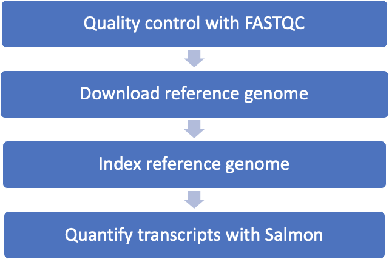

9 Automating your analyses with the snakemake workflow system
This ~2.5 hour workshop will introduce you to the snakemake workflow system, for executing large-scale automated analyses.
By the end of this lecture, we will:
- know how to make basic workflows in snakemake
- understand variable substitution in snakemake rules
- understand wildcard matching in snakemake rules
- be introduced to reasons why workflow systems can help you do your computing more easily
9.1 What is a workflow and why use one?
A workflow is a series of sequential tasks that need to be completed in order to reach a goal.
Workflows are ubiquitous!
Making pizza is a workflow!

Many things in bioinformatics are workflows.
Every bioinformatics workflow consists of multiple steps, taking previous outputs (data or information) in and executing upon them and outputting something.
Raw data goes in, results come out!
9.2 Snakemake: A workflow management system
Snakemake is a commonly used workflow system created by Johannes Koester and others (see 2012 publication).
Many other workflow systems exist. E.g. nextflow, Common Workflow Language (CWL), and Workflow Definition Language (WDL). Are all good! Each workflow system comes with its own syntax and set of advantages. They are all here to make computational methods reproducible and shareable.
(If you work in R a lot, you might be especially interested in drake – which is now called Targets.)
Today we’re going to talk about ways of automating workflows using snakemake.
9.2.1 Fun fact
The name ‘snakemake’ comes from the fact that it’s written in (and can be extended by) the Python programming language. (Confusingly, Python is actually named after Monty Python, not the reptiles.)
9.2.2 The Snakefile
- Snakemake works by looking at a file called the Snakefile.
- Snakefile contains recipes (or rules) for running tasks and creating files.
- Each rule is defined as a step in the workflow.
- Snakemake uses the rules and command line options to figure out how the rules relate to each other so it can manage the workflow steps.
9.3 Getting started - logging into farm!
As per the instructions in workshop 3 and workshop 4, log into farm.cse.ucdavis.edu using your datalab-XX account.
When you log in, your prompt should look like this:
(base) datalab-01@farm:~$
If it doesn’t, please alert a TA and we will help you out!
9.4 Installing snakemake
We will use conda to install snakemake-minimal. You have conda pre-installed from workshop 4.
We will install snakemake inside a conda environment called “snakemake”
conda create -y --name snakemake snakemake-minimalThis command makes a new environment called “snakemake” and installs snakemake in it! Here, snakemake-minimal is just the stuff needed to run snakemake, without some extra bells and whistles.
Activate the environment with this command:
conda activate snakemakeCheck the version of snakemake with
snakemake --versionAs of August 2021, the snakemake version is 6.7.0; yours should be that version or later.
Next, add two bioinformatics software to the snakemake environment: fastqc and salmon
conda install -y fastqc salmonThese are two packages that we will use for bioinformatics work.
9.5 More setup
9.5.1 Create a working directory
Create a working directory called snakemake_lesson
mkdir -p ~/snakemake_lesson
cd ~/snakemake_lesson9.5.2 Download some data
curl -L https://osf.io/5daup/download -o ERR458493.fastq.gz
curl -L https://osf.io/8rvh5/download -o ERR458494.fastq.gz
curl -L https://osf.io/xju4a/download -o ERR458500.fastq.gz
curl -L https://osf.io/nmqe6/download -o ERR458501.fastq.gzYou should now have four files in your current directory, representing four sequencing experiments.
Now we’re all set!
9.6 RNA-Seq workflow we will automate

9.7 First step: quality control with FASTQC
ERR458493.fastq.gz is a fastq file that contains RNA-Seq data from one sample called ERR458493. We can do some quality control to see how good the sequence is by running it through a program called fastqc, like this:
fastqc ERR458493.fastq.gzThis command should produce two output files: ERR458493_fastqc.html and ERR458493_fastqc.zip
So this is a pretty simple bioinformatics task, but let’s use this task as the start of our snakemake workflow!
Remove output:
rm ERR458493_fastqc.zip
rm ERR458493_fastqc.html9.7.1 Create a Snakefile
Create a new file and call it “Snakefile”
nano SnakefileCopy and paste this text into the Snakefile:
rule all:
input:
"ERR458493_fastqc.html",
"ERR458493_fastqc.zip"
rule make_fastqc:
input:
"ERR458493.fastq.gz"
output:
"ERR458493_fastqc.html",
"ERR458493_fastqc.zip"
shell:
"fastqc ERR458493.fastq.gz"
Save and close.
To run the snakefile, type:
snakemake -p -j 1It worked! There is a html file and a zip file.
Let’s explore the logic of what happened:
- Each rule tells Snakemake how to do something.
- The first rule (in this case called “all”) is the rule run by default, so we are asking snakemake to create the two target files
ERR458493_fastqc.htmlandERR458493_fastqc.zip. - Snakemake first looks at the directory to see if the target files are there. (They’re not!)
- Snakemake then looks at the rest of the rules one at a time (in this case, there’s only one!) to see if it can figure out how to make the target files.
- The make_fastqc rule says, “if this input exists, you can run the provided shell command to make that output”. So snakemake complies!
Here, the “input:” in the rule all has to match the “output” in the rule make_fastqc or else Snakefile wouldn’t know what to make.
Meta-notes:
- Snakefile contains a snakemake workflow definition
- The rules specify steps in the workflow
- You can “decorate” the rules to tell snakemake how they depend on each other.
- Rules can be in any order, but put “default goals” as first
- Information within rules such as input and output (and other things) can be in any order, as long as they are before shell.
- These are just shell commands, with a bit of “decoration”. You could run them yourself if you wanted!
- Rule names are arbitrary (letters, numbers, _)
- You can specify a subset of outputs, e.g. just the .html file, and snakemake will run the rule even if it only needs one of the files.
- It goes all red if it fails! (try breaking one command :)
- It’s all case sensitive.
- Tabs and spacing matter! You could use the
-ET4flag in nano to make the editor treat tabs as 4 spaces. - If you see syntax error messages, always check your tabs first. Replacing tabs with spaces could fix the problem!
- You can make lists for multiple input or output files by separating filenames with a comma.
9.8 Some features of workflows
If you run snakemake -p -j 1 again, it won’t do anything. That’s because all of the input files for the first rule already exist!
However, if you remove a file and run snakemake
rm ERR458493_fastqc.html
snakemake -p -j 1Then snakemake will run fastqc again, because now you don’t have one of the files you’re asking it to make!
This ability to selectively figure out whether or not to run a command is one of the most convenient features of snakemake.
9.8.1 What are these flags (-p, -j)?
-p or --printshellcmd: Print out the shell commands that will be executed.
-j or --jobs: Use at most N CPU cluster/cloud jobs in parallel.
9.8.2 When you run snakemake, by default, it runs the first rule.
How can we run a different rule?
Specifying the rule name, tells snakemake to run that specific rule:
snakemake -p -j 1 make_fastqcSpecifying the output file you want, tells snakemake to run the rule that produces the desired output file:
snakemake -p -j 1 ERR458493_fastqc.html9.9 Making the rules more generic
Let’s make the make_fastqc rule a little more generic. Edit the file and make the rule look like this:
rule make_fastqc:
input:
"ERR458493.fastq.gz"
output:
"ERR458493_fastqc.html",
"ERR458493_fastqc.zip"
shell:
"fastqc {input}"It replaces the {input} with whatever is in the “input:” line, above.
CHALLENGE: Add a new rule, called make_fastqc2, that runs fastqc on ERR458501.fastq.gz
Does it run?
Reminder: add the desired output file to the “all” rule as an input, too!
9.10 Wildcards
You should now have two rules: 1) make_fastqc and 2) make_fastqc2,
They have the same shell command but they have different inputs and outputs: one has “ERR458493.fastq.gz” as an input, and “ERR458493_fastqc.html” and “ERR458493_fastqc.zip” as outputs, while the other has “ERR458501.fastq.gz” as an input, and “ERR458501_fastqc.html” and “ERR458501_fastqc.zip” as outputs.
If you line these up, you’ll notice something interesting:
ERR458493.fastq.gz
ERR458493_fastqc.html
ERR458493_fastqc.zip
^^^^^^^^^
ERR458501.fastq.gz
ERR458501_fastqc.html
ERR458501_fastqc.zip
^^^^^^^^^We can make use of this commonality by adding a wild card! We will tell snakemake that any time it is asked for a file that ends with _fastqc.html or _fastqc.zip, it should look for a similarly named file that ends with .fastq.gz. If it finds one, it can run fastqc on that file to produce those outputs.
Change the make_fastqc rule:
- the input: is “{sample}.fastq.gz”
- the output is “{sample}_fastqc.html”, “{sample}_fastqc.zip”
- delete the make_fastqc2 rule!
Your complete Snakefile should look like this:
rule all:
input:
"ERR458493_fastqc.html",
"ERR458493_fastqc.zip",
"ERR458501_fastqc.html",
"ERR458501_fastqc.zip"
rule make_fastqc:
input:
"{sample}.fastq.gz"
output:
"{sample}_fastqc.html",
"{sample}_fastqc.zip"
shell:
"fastqc {input}"
Let’s try it!
rm *.html
snakemake -p -j 1Please note: wildcards operate within a single rule, not across rules.
CHALLENGE: Update the Snakefile so that it runs fastqc on “ERR458494.fastq.gz” and “ERR458500.fastq.gz” too.
9.11 Adding more rules
Now let’s add some more rules at the bottom.
For our desired workflow, we need to do three things: 1) Download a reference transcriptome 2) Index the reference transcriptome 3) Quantify the reference genes based on the reads (using salmon)
9.11.1 Downloading the reference genome
The download_reference shell command is:
curl -L -O https://downloads.yeastgenome.org/sequence/S288C_reference/orf_dna/orf_coding.fasta.gzand it creates a local file orf_coding.fasta.gz.
(Note that you can always run the command at the prompt if you want to make sure that it works, and to find out what the output filename is!)
Add the appropriate rule to the Snakefile - it should look like this:
rule all:
input:
"ERR458493_fastqc.html",
"ERR458493_fastqc.zip",
"ERR458501_fastqc.html",
"ERR458501_fastqc.zip",
"orf_coding.fasta.gz"
rule make_fastqc:
input:
"{sample}.fastq.gz",
output:
"{sample}_fastqc.html",
"{sample}_fastqc.zip"
shell:
"fastqc {input}"
rule download_reference:
output:
"orf_coding.fasta.gz"
shell:
"curl -L -O https://downloads.yeastgenome.org/sequence/S288C_reference/orf_dna/orf_coding.fasta.gz"9.11.2 Add the index genome command:
The index reference shell command is:
salmon index --index yeast_orfs --transcripts orf_coding.fasta.gzThis is what the snakefile should look like:
rule all:
input:
"ERR458493_fastqc.html",
"ERR458493_fastqc.zip",
"ERR458501_fastqc.html",
"ERR458501_fastqc.zip",
"orf_coding.fasta.gz",
directory("yeast_orfs")
rule make_fastqc:
input:
"{sample}.fastq.gz",
output:
"{sample}_fastqc.html",
"{sample}_fastqc.zip"
shell:
"fastqc {input}"
rule download_reference:
output:
"orf_coding.fasta.gz"
shell:
"curl -L -O https://downloads.yeastgenome.org/sequence/S288C_reference/orf_dna/orf_coding.fasta.gz"
rule index_reference:
input:
"orf_coding.fasta.gz"
output:
directory("yeast_orfs")
shell:
"salmon index --index yeast_orfs --transcripts {input}"BUT if you try to run snakemake -p -j 1 then it won’t run… we have to specify the rule to run:
snakemake -p -j 1 download_reference
snakemake -p -j 1 index_referenceCHALLENGE: Modify the snakefile such that ALL the rules run when you type snakemake -p -j 1
9.11.3 Running Salmon quant
The next command we want to snakemake-ify for all samples is this command:
salmon quant -i yeast_orfs --libType U -r ERR458493.fastq.gz -o ERR458493.fastq.gz.quant --seqBias --gcBiasLet’s put it in a snakemake rule called salmon_quant
rule salmon_quant:
shell:
"salmon quant -i yeast_orfs --libType U -r ERR458493.fastq.gz -o ERR458493.fastq.gz.quant --seqBias --gcBias"and then let’s decorate with input and output:
rule salmon_quant:
input:
"ERR458493.fastq.gz"
output:
directory("ERR458493.fastq.gz.quant")
shell:
"salmon quant -i yeast_orfs --libType U -r ERR458493.fastq.gz -o ERR458493.fastq.gz.quant --seqBias --gcBias"Next, replace the filename with wildcards:
rule salmon_quant:
input:
"{sample}.fastq.gz"
output:
directory("{sample}.quant")
shell:
"salmon quant -i yeast_orfs --libType U -r {input} -o {output} --seqBias --gcBias"Snakemake doesn’t automatically look at all the files in the directory and figure out which ones it can apply rules to - you have to ask it more specifically, by asking for the specific files you want.
CHALLENGE: make the command snakemake run with no target rules for all four salmon quant commands.
9.11.4 One version of the final Snakefile
rule all:
input:
"ERR458493_fastqc.html",
"ERR458493_fastqc.zip",
"ERR458501_fastqc.html",
"ERR458501_fastqc.zip",
"ERR458500_fastqc.html",
"ERR458500_fastqc.zip",
"ERR458494_fastqc.html",
"ERR458494_fastqc.zip",
"orf_coding.fasta.gz",
"yeast_orfs",
"ERR458493.fastq.gz.quant",
"ERR458501.fastq.gz.quant",
"ERR458494.fastq.gz.quant",
"ERR458500.fastq.gz.quant"
rule make_fastqc:
input:
"{sample}.fastq.gz",
output:
"{sample}_fastqc.html",
"{sample}_fastqc.zip"
shell:
"fastqc {input}"
rule download_reference:
output:
"orf_coding.fasta.gz"
shell:
"curl -L -O https://downloads.yeastgenome.org/sequence/S288C_reference/orf_dna/orf_coding.fasta.gz"
rule index_reference:
input:
"orf_coding.fasta.gz"
output:
directory("yeast_orfs")
shell:
"salmon index --index yeast_orfs --transcripts {input}"
rule salmon_quant:
input:
"{sample}"
output:
directory("{sample}.quant")
shell:
"salmon quant -i yeast_orfs --libType U -r {input} -o {output} --seqBias --gcBias"9.12 Titus’ version of the final snakefile as created during the workshop
SAMPLES=["ERR458493", "ERR458501", "ERR458494", "ERR458500"]
print('samples are:', SAMPLES)
rule all:
input:
expand("{sample}_fastqc.html", sample=SAMPLES),
"orf_coding.fasta.gz",
"yeast_orfs",
expand("{sample}.quant", sample=SAMPLES),
rule make_fastqc:
input:
"{sample}.fastq.gz",
output:
"{sample}_fastqc.html",
"{sample}_fastqc.zip"
shell:
"fastqc {input}"
rule download_reference:
output:
"orf_coding.fasta.gz"
shell:
"curl -L -O https://downloads.yeastgenome.org/sequence/S288C_reference/orf_dna/orf_coding.fasta.gz"
rule index_reference:
input:
"orf_coding.fasta.gz"
output:
directory("yeast_orfs")
shell:
"salmon index --index yeast_orfs --transcripts {input}"
rule salmon_quant:
input:
fastq = "{sample}.fastq.gz",
index = "yeast_orfs"
output:
directory("{sample}.quant")
shell:
"salmon quant -i {input.index} --libType U -r {input.fastq} -o {output} --seqBias --gcBias"9.13 Random aside: –dry-run or -n
If you give snakemake a –dry-run (-n) parameter, it will tell you what it thinks it should run but won’t actually run it. This is useful for situations where you don’t know what needs to be run and want to find out without actually running it.
9.14 Advanced features
There are many advanced features to snakemake, and we’ll touch on a few of them here.
9.14.1 Rule-specific conda environments with conda: and –use-conda
If you specify a conda environment file, in a conda: block in a rule, and run snakemake with --use-conda, it will always run that rule in that software environment.
This is useful when you want to version-pin software a specific action, and/or have conflicting software in different rules.
See Making and using environment files for more information on conda environment files!
9.14.2 parallelizing snakemake: -j
You can tell snakemake to run things in parallel by doing
snakemake -j 2 This will tell snakemake that it can run up to two jobs at a time. (It automatically figures out which jobs can be run at the same time by looking at the workflow graph.)
9.15 Practical advice: How to build your workflow
General advice:
- Start small, grow your snakefile!
- DO copy and paste from this tutorial and others you find online!
- It rarely hurts to just re-run snakemake until it does nothing but error out, and then analyze that error :)
9.15.1 Approach 1: write down your shell commands
- Pick a small, linear workflow, and then:
- Make rules for each of your shell commands, and run them individually;
- Add input and output to each rule until you can “just” run the last rule and have it all work; start adding wildcards as you see fit!
9.15.2 Approach 2: automate one step that you run a lot
Alternatively, if you have a complex workflow that would take a lot of time and energy to convert, pick a specific part that you would like to run on a lot of files!
9.16 Summary of what we did today.
Snakefiles contain rules
Snakemake uses those rules to figure out what files to build
The basic idea is simple, but there are lots of tricks that we will teach you!
9.17 More Snakemake resources
Google is your friend!
The first three 201(b) class materials are a fairly gentle introduction
a free book! – the Snakemake book
ANGUS 2019 material – Workflow Management using Snakemake ### Dealing with complexity Workflows can get really complicated; here, for example, is one for our most recent paper. But it’s all just using the building blocks that I showed you above!
If you want to see some good examples of how to build nice, clean, simple-looking workflows, check out this RNAseq example.
Debugging Q: What if I get a workflow error? If you get the error
WorkflowError: Target rules may not contain wildcards. Please specify concrete files or a rule without wildcards.then what’s happening is you’re trying to directly run a rule with a wildcard in it (i.e. an abstract rule), and snakemake can’t figure out what the wildcard should be; instead, ask snakemake to build a specific file.
For example, with the rule immediately above that adds wildcards to salmon_quant,
snakemake -p -j 1 salmon_quantwill complain about the target rule containing wildcards. You should instead run
snakemake ERR458493.fastq.gz.quantwhich snakemake can use to figure out what the wildcards should be.
An alternative to specifying the file on the command line is to put it in the default rule, e.g. rule all: (see the section on default rules in GGG 201(b)) and then you can run snakemake.
We can use the -n gives a dry run of the Snakefile. For example snakemake -p -j 1 -n
9.18 A quick checklist:
- Are you asking snakemake to create a specific file? either by:
- executing snakemake
or - by specifying a rule that has an input or an output without wildcards, or
- by providing a default rule
- executing snakemake
- for any rule that you expect to be executed automatically (because some other rule needs its output), have you specified output:?